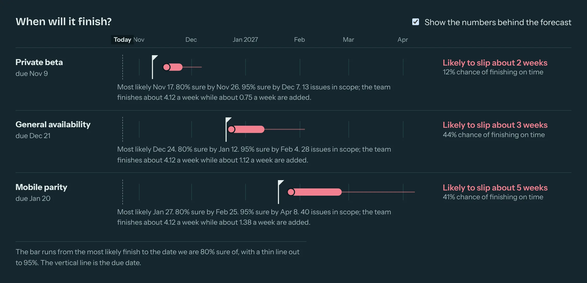
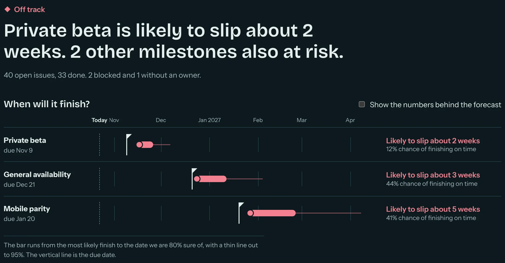
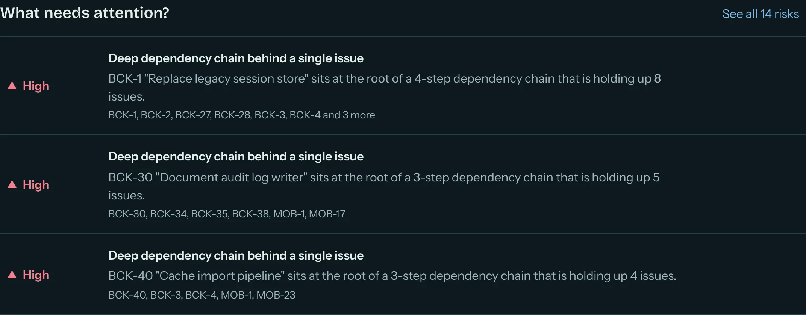
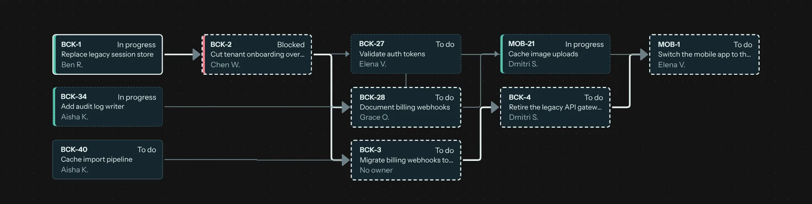

When will it finish?
Thousands of simulations on your team's recent pace give a likely date, an 80% date and the chance of making the deadline.
PGM Lens reads Jira, GitLab and GitHub, finds the work that is holding everything else up, and forecasts the finish date as honest probabilities instead of one hopeful date.
Free and self-hosted. No sign-up, no tracking.

Every screen opens with the answer in plain language. The detail is one click away.

Thousands of simulations on your team's recent pace give a likely date, an 80% date and the chance of making the deadline.

Rules flag stale blockers, scope creep, overloaded owners and unowned critical work, each with what to do next.

A dependency map built from your real blocking links surfaces the one issue at the root of a chain.
Point a connector at Jira, GitLab or GitHub. Everything is normalised into one model, so a program across several trackers reads as one.
Graph analysis, a Monte Carlo forecast and declarative risk rules run on your data. Thresholds live in a YAML file you can edit.
Read the verdict, open the risk, and brief leadership. AI summaries may only quote facts, and anything ungrounded is rejected.
Forecasts are probability bands, not a single date. Tick one box and the numbers behind every forecast appear.
Briefings are written from numbered facts. A claim that cites no fact, or contains a number that is not in the facts it cites, is rejected.
Risk thresholds live in a YAML file you can extend, so "stale" means what it means for your team.
The demo ships with a realistic program that is deliberately behind schedule. You need uv and Node 20 or newer, or Docker.
# from source (works on Windows, macOS and Linux)
git clone https://github.com/vimalmaheedharan/pgmlens
cd pgmlens
uv sync
cd apps/web && npm install && npm run build && cd ../..
uv run python -m pgmlens_api --web apps/web/dist
# open http://localhost:8000 (with make: "make setup" then "make demo")
# or with Docker
docker compose up # http://localhost:8080PGM Lens is version 0.1. It is a solid core, not a finished product. Before you rely on it:
Free, open source and yours to self-host. Star the repo to follow along, or read the roadmap to see what is next.